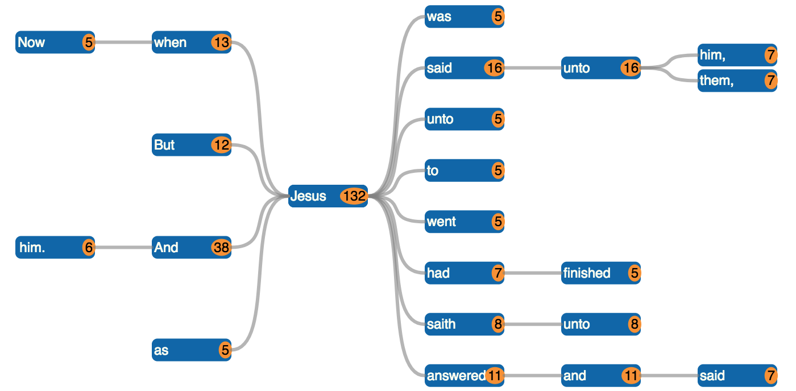
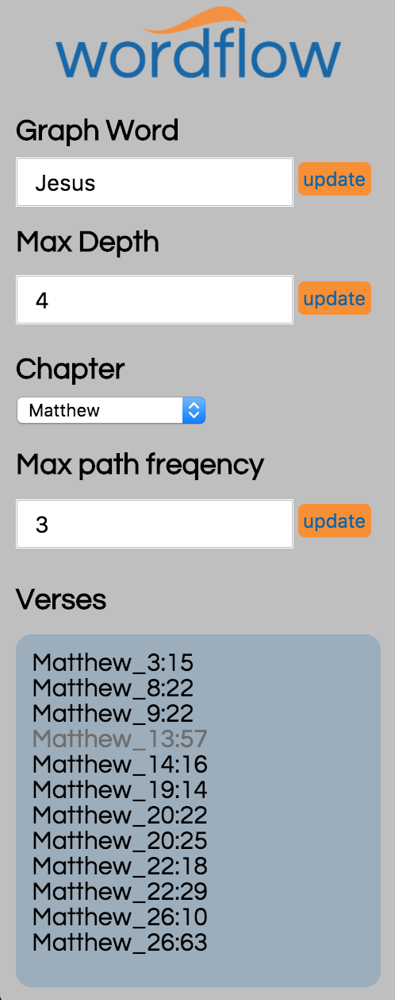
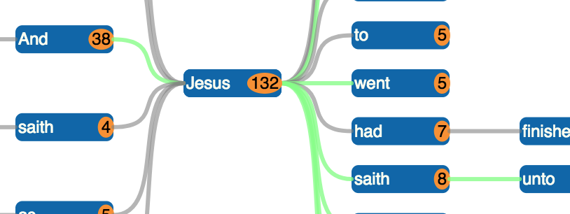

Wordflow is an application designed for studying the "flow" of words throughout the Bible. More specifically, it helps the user identify which words (or sequences of words) lead up to and come after any word of interest.
The main feature of wordflow is the "word graph". The word graph is displayed as a bi-directional tree, with the word you search for as the center-point. Below is an example word graph.
The pathways to the left of "Jesus" are words (or sequences of words) that lead up-to the word "Jesus" within the search constraints (more on these in a bit). Similarly, the ones to the right are the words (or sequences) that follow the word "Jesus" within the search constraints. Each word (or "node") in the graph also has a orange-highlighted number. The number represents the number of times that word appears in that position, relative to the central word. In the example above, the word "when" appears before "Jesus" 13 times. However, the sequence of words "Now when" appears before "Jesus" 5 times. The same goes word the words to the right. The word "answered" appears after Jesus 11 times, but the whole phrase "answered and said" appears only 7 times. All of the words, numbers, and information displayed on the word graph are representative of the Bible within the search parameters.
All of the words, numbers, and information displayed on the word graph are representative of the Bible within the search constraints. The search parameters are user-editable, and appear on the left-hand side of the window. Below is an example set of search parameters.
The Graph Word is the word which will be the center of the word graph. The Max Depth the maximum length that the left/right paths will extend out. This can be used to limit the size of the graph, and make it more manageable for the user to view. Currently, wordflow can only search on chapter at-a-time. You can use the Chapter dropdown to select the desired chapter to search. Max Path Frequency controls how often a particular sequence of words must occur in order for it to be shown in the graph. When it is set to 1, all pathways will appear. You can set it higher to prune the graph. Again, this can be useful to limit the size of the graph, when there are many search results.
When you click on a word in the word graph, a few things happen. All of the verses that correspond to this word in the graph appear in the Verses text box. You can click on any of these verses, and it will link to the same verse on blueletterbible.com.
When you click on a word, you'll also notice that the color of some of the pathways becomes highlighted green. The highlighted pathway represents all of the paths in the graph that correspond with that particular word. Take a look at the below example:
In this example, I clicked on the word "And". Many paths on the right side of the graph also became highlighted green. This means that each of the green paths are one of the ones that come after "And Jesus" in the text.
The current version of wordflow is based on the American Standard Version (ASV) bible. I would like to support multiple versions in the future, especially NASB. However, wordflow does not support this at the time being due to copyright and trademark restrictions. Hopefully this, as well as other common versions, can be added in the future.